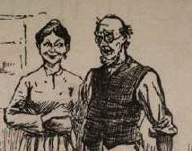

Special Collections

One of the main goals of this site is to make the
rare and often unique Twain items in the Barrett Collection
available to users around the world. At left is part of the first
page of the manuscript of "A True Story," a sketch MT wrote in
1874. Based on the experience of slavery of "Aunt Rachel" (whom
MT knew as a servant at Quarry Farm, where he was finishing
Tom Sawyer), it was MT's first sustained attempt to
represent African American speech. It was also the first of his
works ever to be published in The Atlantic Monthly.
Clicking on the image will take you to the complete text and
29-page manuscript of the tale, as they are displayed in the
site's section of the sources of Huck Finn.

On a much less serious note -- except to MT, whose own publishing
company lost $10,000 because of it -- is the Barrett Collection's
rare copy of the original sales prospectus for Huck Finn.
The prospectus had to be withdrawn from circulation, and altered
and rebound, after it was discovered that someone at the
engraving plant had turned Uncle Silas into a flasher. By
clicking on the image at left you can see more of Silas than you
were meant to.
The Barrett Collection contains the manuscripts of several of
MT's speeches. Although he sought to give his live performances
an air of improvisation, he always carefully wrote out even his
after-dinner "toasts" beforehand, and memorized them while
rehearsing them in private. At left is part of the first page of
a sixteen-page comic tribute "To Woman" (a staple toast of
nineteenth century American banquets) that MT delivered at
Delmonico's in New York in 1882. Clicking on the image will take
you to the display of this speech in "Mark Twain on Stage," where
you can "see" the entire manuscript (and see how carefully MT
prepared his live performances) and read press reviews of
it.

Several dozen of MT's letters can also be "seen" throughout the
site. Twelve of them are gathered together in an interactive
exhibit that displays the many different names Sam Clemens and
Mark Twain used to identify themselves. You can go there by
clicking on the image at left.

The site contains many different kinds of promotional materials
created by MT and his publishers: prospectuses, posters, ads,
brochures, and novelty items like the one at left. This pocket
edition of "Pudd'nhead Wilson's Calendar" was produced by The
Century Magazine to advertise its ongoing serial publication
of the novel. There are two versions of this "text" in the
Barrett Collection. MT signed the one at left "with Wilson's
compliments" for presentation to Bram Stoker, the author of
Dracula. Clicking on it will take you to the other
version, as displayed in the "Pudd'nhead Wilson" section
of the site.

And then there are the kinds of items that only MT -- with his
wide range of interests, his impulsive imagination and his
lifelong ambition for money -- could produce. Included in that
category is the Barrett Collection's copy of a game MT designed
and marketed during the 1880s. You can see it by clicking on the
image at left. If you want to play it, you'll have to get your
own copy.
BACK TO SAMPLER
HOMEPAGE